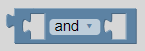
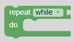
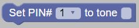
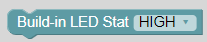

| This block is used to make something happen when a certain condistion is met. It can be extended by clicking the gear icon with else if and else statements. The else if statement can be used to check for another condition. the else statement can be used to perform an action if none of the previously stated conditions are met. | |
This block is used to compare two variables and see whether they are the same or different. The possibilities
are:
|
|
|  |
This block is used to determine the logic between two variables. The possibilities are:
|
| This block is used to add the not operator to a variable, changing something that is true to false and something that is false to true. | |
| This block is used to set a variable to null, which means it has no value. |
Blocks explained by category
| This block is used to make the next line of code happen later. A number can be added in the blue block which wil be the amount of milliseconds the programme will pause. | |
| This block is used to put a for loop in the programme. A for loop is used to loop through a part of the code a set number of times. The variable can be renamed and the start and end values can be added. In the last gap, it can be added by how much the variable increases after every time the code in the loop has been executed. | |
|  | This block is used to put a loop in the programme. If while is chosen from the dropdown menu, the code will repeat until the condition is no longer met. If until is chosen, the code will repeat until the condition is met. |
| This block is used to set a variable to a value. | |
| This block is used to add a variable to another block. |
| This block is used to add a word or line of text to another block. | |
| This block is used to set the value of a block to either high or low. | |
| This block is used to set the value of a Arduino component on a certain pin to high or low. This is used for the digital pins (1-13) and components. Digital is faster but less precise than analog. | |
| This block is used to get the value of a Arduino component from a certain pin. This is used for the digital pins (1-13)and components. Digital is faster but less precise than analog. | |
| This block is used to set the value of a Arduino component on a certain pin. This is used for the analog pins (A0-A5) and components. Analog is slower but more precise than digital. | |
| This block is used to get the value of a Arduino component on a certain pin. This is used for the analog pins (A0-A5) and components. Analog is slower but more precise than digital. | |
| This block is used to display text. |
|  | This block is used to play a tone (for example C4, BS8, etc.) without a time limit |
 |
This block is used to play a tone (for example C4) for a certain amount of time. |
| This block is used to not play a tone. |
| This block is used to represent the LED component. It can be set to high (on) and low (off). | |
| This block is used to represent the button component. | |
| This block is used to represent the joystick component. | |
| This block is used to represent the buzzer component. It can be set to high (on) or low (off). | |
| This block is used to represent the rgb LED component. The colour can be changed in the bottom right corner. | |
|  | This block can be used to represent the build-in LED of the Arduino. It can be set to high (on) or low (off). |
Demo files
Here you can find some demo files to help you be on your way!
| Demo 1 Play Baby Shark on a simple buzzer |
| Demo 2 Make a keyboard with 5 buttons that control a speaker & a LED |
| Demo 3 Make a LED flash 10 times fast, and 10 times slow |